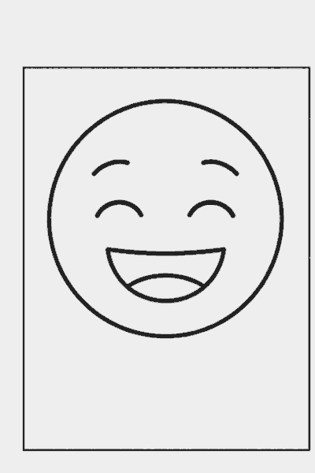
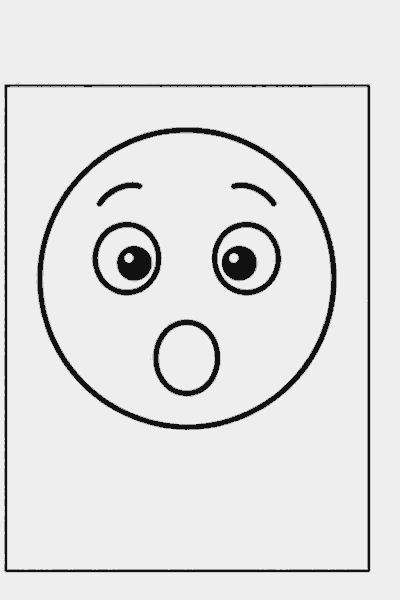

Misericordia di AricciaConfraternita di Misericordia di Ariccia ODV
Bambini · 3-5 anni
Come mi sento oggi?
3-5 anni😊 Indica con il dito o cerchia la faccina che assomiglia a come ti senti. Tutte le emozioni vanno bene.

Felice

Calmo

Triste

Spaventato

Arrabbiato

Confuso
❤️ Tutte le emozioni vanno bene. Non c'è una giusta o una sbagliata.